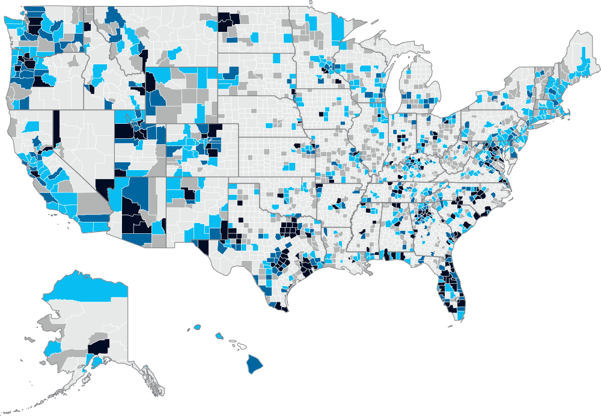

<% if (COPY.labels.headline) { %>
<h1><%= t.smarty(COPY.labels.headline) %></h1>
<% } %>

<% if (COPY.labels.subhed) { %>
<h2><%= t.smarty(COPY.labels.subhed) %></h2>
<% } %>

<div class="key-wrap numeric-scale">
  <h3><%= COPY.labels.hed_scale %></h3>
  <ul class="key">
    <li class="key-item"><b style="background: #e6e6e6;"></b><label><0%</label></li><li class="key-item"><b style="background: #b3b4b4;"></b><label>0-5%</label></li><li class="key-item"><b style="background: #00bcf1;"></b><label>5-10%</label></li><li class="key-item"><b style="background: #00689e;"></b><label>10-15%</label></li><li class="key-item"><b style="background: #000d24;"></b><label>>15%</label></li>
  </ul>
</div>

<div id="chart" class="graphic" role="img" aria-label="<%- COPY.labels.screenreader %>">
  
</div>

<% if (COPY.labels.footnote) { %>
<div class="footnotes">
  <h4>Notes</h4>
  <p><%= COPY.labels.footnote %></p>
</div>
<% } %>

<div class="footer">
  <% if (COPY.labels.source) { %>
  <p>Source: <%= COPY.labels.source %></p>
  <% } %>

  <% if (COPY.labels.credit) { %>
  <p>Credit: <%= COPY.labels.credit %></p>
  <% } %>
</div>
